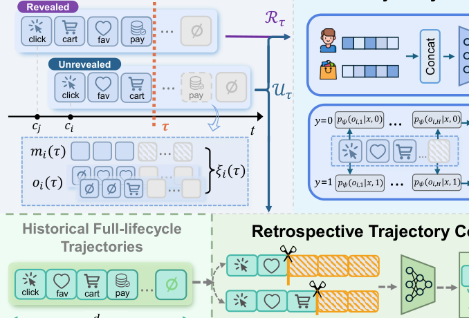
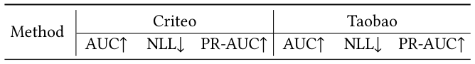
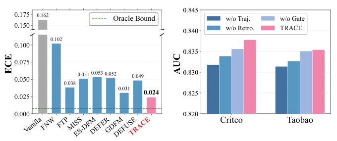
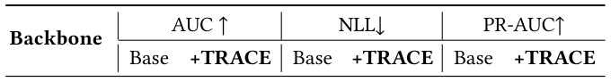

Follow the TRACE: Exploiting Post-Click Trajectories for Online Delayed Conversion Rate Prediction (跟随轨迹：利用点击后轨迹进行在线延迟转化率预测)
- 会议/期刊: SIGIR 2026 (Short Paper)
- 推荐链路定位: 精排 (CTR/CVR Prediction)
- 研究方向: CTR/CVR 预估与特征交叉 / 多任务学习与列表级重排（延迟反馈与流式训练）
- 论文原文: https://arxiv.org/abs/2604.23197v1
- 开源代码: https://github.com/LunaZhangxy/TRACE
TL;DR (核心速览)
针对在线 CVR 预估中延迟反馈导致的"标签准确率 vs 数据新鲜度"两难，TRACE 将点击后行为在观测窗口内的累积演化形式化为反馈轨迹，用贝叶斯分解把静态意图 \(p(y|\bm{x})\) 与动态轨迹似然 \(g(\bm{\xi}|\bm{x},y)\) 融合，对未揭示样本做连续后验精化而非强打硬标签；并设计可靠性门控的回溯轨迹补全器（全生命周期数据 + 随机视界截断训练）缓解早期轨迹稀疏。在 Criteo / Taobao 流式模拟协议下，AUC 达 0.8382 / 0.8354，优于 DEFUSE、GDFM 等 SOTA，且作为即插即用模块平均带来 +1.20% AUC。
Background & Motivation (背景与动机)
- 领域背景与主流范式: 在线广告 CVR 预估中，点击即时到达而转化可能延迟数分钟到数天。流式训练时，近期曝光尚未走完归因窗口 \(d_{\max}\)，只能观测到截至当前时间戳 \(\tau\) 的反馈。主流应对范式分三线：(1) 延迟建模（参数化/非参数/离散化延迟分布，如 Chapelle 2014、ES-DFM）；(2) 无偏标签纠正（重要性采样/样本重加权，如 FNW、DEFER、DEFUSE）；(3) 多视界流式融合（FTP、MISS 等融合多观测窗口估计）。
- 现有方法局限:
- 延迟建模与重加权方法把未转化样本当作一个"待纠正的负例"，忽略了点击后行为在观测期内如何演化这一过程性信息；
- 多视界方法（FTP/MISS）把各窗口估计视为可聚合的独立信号，丢失了窗口之间的时序结构；
- 行为感知方法 GDFM 虽引入点击后动作，但把每个动作当作独立代理信号，未刻画累积行为状态在观测窗口上的整体形态。
- 核心挑战 (Key Challenge): 早期阶段轨迹极度稀疏，未揭示正例与真负例在观测上几乎不可分，模型会退化为纯静态估计；简单地增加窗口数或拼接行为特征无法解决"信息缺失下的后验不确定性"问题。
- 核心洞察与切入点 (Key Insight): 阿里行为日志分析显示超过 50% 购买发生在前序交互后 1 小时内，且 CVR 随"动作-购买"间隔呈幂律衰减——说明点击后经过时间与最终转化、标签可靠性内在相关。因此作者主张：反馈轨迹本身是"观测完整度"的动态指示器，可用于区分"视界受限的未揭示正例"与"真负例"，从而在不等最终结果的前提下持续精化后验。
Problem Formulation & Method (问题定义与方法架构)
1. 符号定义与输入表征 (Notations & Input Representations)
- 数据集 \(\mathcal{D}=\{(\bm{x}_i, y_i)\}_{i=1}^{N}\)，\(\bm{x}_i\) 为特征，\(y_i\in\{0,1\}\) 为转化标签。
- 每次交互 \(i\) 关联点击时间戳 \(c_i\) 与转化时间戳 \(v_i\)（\(v_i=\infty\) 表示未转化）。真值标签：\(y_i=\mathbb{I}(c_i < v_i \le c_i + d_{\max})\)。
- 在线时刻 \(\tau\) 的已过时间 \(u_i(\tau)=\tau-c_i\)，当前可观测标签 \(y_i(\tau)=\mathbb{I}(c_i < v_i \le \tau)\)。
- 将 \([0, d_{\max}]\) 离散为 \(H\) 个窗口，反馈轨迹定义为部分视图 \(\bm{\xi}_i(\tau)=(\bm{o}_i\odot \bm{M}_i(\tau), \bm{m}_i(\tau))\)：
- \(\bm{m}_i(\tau)\in\{0,1\}^H\) 为可见性掩码，\(\bm{M}_i(\tau)=\bm{m}_i(\tau)\bm{1}^\top_K\in\{0,1\}^{H\times K}\) 为行广播；
- \(\bm{o}_i\in\{0,1\}^{H\times K}\) 为全生命周期序列，由 \(K\) 类点击后行为的窗口级累积状态向量 \(o_{i,h}\in\{0,1\}^K\) 组成。
- 流式数据集 \(\mathcal{D}_\tau=\{(\bm{x}_i,\bm{\xi}_i(\tau),z_i(\tau))\}_{i:c_i<\tau}\)，\(z_i(\tau)\) 为当前可观测监督（已揭示样本为 \(y_i\)，否则不可观测）。目标：从部分观测的 \(\mathcal{D}_\tau\) 学习 \(p(y=1|\bm{x},\bm{\xi})\)。
2. 整体流水线 (Overall Architecture)
数据流：静态特征 \(\bm{x}\) 经 MLP \(f_\theta\) 得静态意图 \(p_\theta(y|\bm{x})\)；轨迹 \(\bm{\xi}\) 经逐窗口 MLP \(p_\psi(o_{i,h}|\bm{x},y)\) 得动态似然，按熵加权聚合为 \(g_\psi(\bm{\xi}|\bm{x},y)\)；二者经贝叶斯分解（Softmax 域相加）融合为 \(p_\theta(y|\bm{x},\bm{\xi})\)。离线侧用全生命周期轨迹 + 随机视界截断训练回溯补全器 \(q_\phi\)，在线冻结后经可靠性门控 \(w_i\) 以一致性损失 \(\mathcal{L}_{con}\) 引导未揭示样本。
flowchart TD
A["输入层: 静态特征 x + 点击后轨迹 ξ(τ)=(o⊙M, m)"] --> B1["静态意图估计器 f_θ → p_θ(y|x)"]
A --> B2["动态轨迹估计器 p_ψ(o_{i,h}|x,y) → 熵加权聚合 g_ψ(ξ|x,y)"]
B1 --> C["贝叶斯分解融合: p(y|x,ξ)=Softmax[log p(y|x)+log g(ξ|x,y)]"]
A --> D["离线: 全生命周期轨迹 + 随机视界截断 → 回溯补全器 q_φ (冻结)"]
D --> E["可靠性门控 w_i (在线熵 × 补全置信 × 轨迹稀疏度)"]
C --> F["在线优化: L_trj + L_sup + λ·L_con"]
E --> F
F --> G["输出: 连续精化的 CVR 后验"]
3. 核心模块设计与数学原理 (Key Designs & Formulations)
(1) 轨迹条件估计（贝叶斯分解）。核心公式：
物理直觉：静态意图提供先验，轨迹似然提供"该轨迹形态在转化/未转化假设下的支持度"，二者在对数域相加等价于贝叶斯后验更新。轨迹似然按窗口聚合：
权重 \(\alpha_{i,h}=\frac{m_{i,h}\cdot\eta_h}{\sum_t m_{i,t}\cdot\eta_t+\epsilon}\) 按样本归一化，其中 \(\eta_h\propto (H-h+1)^{-1}\exp(-\frac{h}{H}-\beta\tilde{C}_h)\)，\(\tilde{C}_h=\mathrm{H}(y|o_h)/\max_k \mathrm{H}(y|o_k)\) 为训练熵比——越靠后、判别熵越低的窗口权重越高，\(\beta=2\) 控制熵惩罚强度。
(2) 边际化训练避免硬标签偏差。对未揭示样本不强打负标签，而是对 \(y\) 边缘化，逐窗口边际损失：
轨迹损失 \(\mathcal{L}_{trj}\) 为按 \(W_{i,h}=m_{i,h}\eta_h\) 加权的 \(\ell_{i,h}\) 均值；已揭示集合 \(\mathcal{R}_\tau=\{i|y_i(\tau)=1\vee(\tau>c_i+d_{\max})\}\) 上用标准交叉熵 \(\mathcal{L}_{sup}\)。流式阶段只更新 \(\theta\)，\(\psi\) 冻结。
(3) 回溯轨迹补全 + 可靠性门控。离线以随机视界截断 \(k\sim\mathcal{U}\{1,\dots,H\}\) 构造模拟部分视图 \(\bm{\xi}_{1:k}=(\bm{o}\odot\bm{m}(k),\bm{m}(k))\)，训练 MLP \(q_\phi\)（拼接静态特征、\(\bm{\xi}_{1:k}\)、视界嵌入 \(e_k\)）：
在线冻结 \(q_\phi\)，对未揭示集 \(\mathcal{U}_\tau\) 用 stop-gradient 软目标做一致性约束：
门控 \(w_i\in[0,1]\) 由三路 sigmoid 输出相乘：在线熵 \(\mathrm{H}(p_i)\)、补全置信 \(1-\mathrm{H}(q_i)\)、轨迹可见度 \(1-\kappa_i\)（\(\kappa_i=\frac{1}{H}\sum_h m_{i,h}\)）——分别刻画当前信息稀缺度与回溯信号可靠性。
4. 训练目标、负采样与推理复杂度 (Optimization, Negative Sampling & Complexity)
- 总损失：\(\mathcal{L}_{total}(\theta;\tau)=\mathcal{L}_{trj}(\theta;\tau)+\mathcal{L}_{sup}(\theta;\tau)+\lambda\mathcal{L}_{con}(\theta;\tau)\)，\(\lambda=0.1\)。模型无关接口形式：\(\min_\theta \mathcal{L}_M(\theta;\tau)+\lambda\mathcal{L}_{con}(\theta;\tau)\)，无需改动骨干架构。
- 负采样策略：本文为 CVR 二分类流式训练，不涉及召回式负采样；未揭示样本通过边际化（式 7）与软目标一致性（式 11）处理，而非硬负标签。
- 复杂度：静态估计器为 MLP（隐层 {256,256,128}）；轨迹估计器对 \(H\) 个窗口各做一次 MLP 前向，复杂度 \(O(H\cdot d^2)\)，Criteo \(H=6\)、Taobao \(H=5\)，开销极小；补全器离线训练、在线仅前向一次。原文未报告具体训练耗时、推理延迟 (ms/request) 与峰值显存。
Experimental Setup & Evaluation Protocol (实验设置与评估协议)
- 数据集统计与预处理（原文未给出用户/物品/交互计数与稀疏度，仅给出时间跨度与窗口设置）：
| 数据集 (Dataset) | 用户数 (#Users) | 物品数 (#Items) | 交互数 (#Interactions) | 稀疏度/密度 (Sparsity) | 模态/辅助特征说明 |
|---|---|---|---|---|---|
| Criteo Conversion Logs | 原文未报告 | 原文未报告 | 60 天点击/转化日志 | 原文未报告 | \(d_{\max}=30\) 天；\(H=6\) 窗口 [6min, 15min, 1h, 1d, 7d, 30d]；\(K=1\)（仅购买） |
| Taobao | 原文未报告 | 原文未报告 | 9 天大规模用户行为日志 | 原文未报告 | \(d_{\max}=3\) 天；\(H=5\) 窗口 [2min, 10min, 2h, 1d, 3d]；\(K=3\)（加购、收藏、购买） |
- 数据划分方式 (Splitting Strategy): 全局时间戳切分 + 流式模拟。Criteo 前 10 天预训练、后 50 天流式评估；Taobao 最后 7 天流式评估。遵循 [26] 的流式协议：按时间顺序划分预训练集与流式集，任意更新步 \(\tau\) 仅可访问 \(c\le\tau\) 的点击样本，且每个样本只考虑 \(\tau\) 前到达的反馈；以固定滑动间隔 \(\Delta\)（Criteo 1h、Taobao 20min）执行"先预测下一区间 \((\tau,\tau+\Delta]\)、再在 \(\mathcal{D}_\tau\) 上更新"的 predict-then-update 流程。该协议严格按时间推进，不存在未来信息泄露。
- 排名评测协议 (Ranking Protocol): 非召回式排序任务，采用流式全量样本的 AUC / NLL / PR-AUC / ECE 评估，无负采样候选集构造。
- 评价指标与显著性检验: AUC↑、NLL↓、PR-AUC↑、ECE↓（校准）。隐藏层统一 {256,256,128}、ReLU、L2=\(10^{-6}\)、Adam、lr=\(10^{-3}\)、batch=4096、\(\lambda=0.1\)、\(\beta=2\)。原文未报告多随机种子方差与配对显著性检验（短论文篇幅所限）。
Key Experimental Results (核心实验结果)
1. 主实验对比 (Main Results)

| 数据集 | 指标 | 最强基线 (DEFUSE) | 本文方法 (TRACE) | Oracle 上界 | 相对提升 (Improv.) |
|---|---|---|---|---|---|
| Criteo | AUC↑ | 0.8335 | 0.8382 | 0.8430 | +0.56% |
| Criteo | NLL↓ | 0.3959 | 0.3919 | 0.3869 | -1.01% |
| Criteo | PR-AUC↑ | 0.6336 | 0.6370 | 0.6447 | +0.54% |
| Taobao | AUC↑ | 0.8325 (GDFM) | 0.8354 | 0.8398 | +0.35% |
| Taobao | NLL↓ | 0.0635 (GDFM) | 0.0610 | 0.0603 | -3.94% |
| Taobao | PR-AUC↑ | 0.4901 (DEFUSE) | 0.4911 | 0.4930 | +0.20% |
TRACE 在全部三项指标上一致领先，且与 Oracle（用真值标签训练的理想上界）差距很小（Criteo AUC 差 0.0048）。对多视界方法（FTP/MISS）的稳定领先说明：显式建模轨迹内时序结构比独立窗口聚合更具判别力；该优势在"仅购买"（Criteo）与"丰富点击后行为"（Taobao）两种设定下均成立。
2. 消融实验与控制变量分析 (Ablation Study)

图 2(b) 消融（Criteo/Taobao AUC）： - w/o Traj.（移除轨迹似然估计器）性能下降最显著，直接验证核心假设——累积行为演化比孤立观测提供更强证据； - w/o Retro.（移除回溯补全器）与 w/o Gate（移除可靠性门控）均带来退化，分别验证后验引导与门控的必要性。 - 原文未报告参数量对齐或图度数匹配等控制变量细节（本文无图结构）。
图 2(a) 校准对比：多个强基线存在"校准-判别"权衡（AUC 高但 ECE 明显偏高），TRACE 取得最低 ECE，缩小与 Oracle 的差距，对在线竞价至关重要。
3. 稀疏度/冷启动分桶与超参敏感度 (Sparsity Buckets & Hyperparameters)
- 交互频次分桶: 原文未报告长尾/冷启动分桶实验。
- 关键超参数: 原文仅给出 \(\lambda=0.1\)、\(\beta=2\) 的取值，未提供敏感度曲线；窗口划分 \(H\) 与 GDFM 对齐（Criteo \(H=6\)、Taobao \(H=5\)）以保证公平比较。
- 模型无关增强分析（表 2）: 在 Criteo 上对 7 个延迟反馈骨干（FNW/FTP/MISS/ES-DFM/DEFER/GDFM/DEFUSE）套用 TRACE 的一致性损失，平均提升 AUC +1.20%、NLL -2.74%、PR-AUC +1.69%；弱骨干收益更大（FNW AUC +3.1%、NLL -10%），强骨干仍有小幅正收益（DEFER/DEFUSE AUC +0.2%），证实其作为即插即用增强器的普适性。

- 线上 A/B 测试: 原文仅包含离线流式模拟实验，未报告线上 A/B 结果。
Highlights, Limitations & Critiques (亮点、局限与审稿级批判)
- 核心亮点与可迁移性:
- "反馈轨迹"这一形式化把延迟反馈从"标签纠正问题"重构为"部分观测下的后验精化问题"，边际化损失（式 7）避免硬标签偏差，思路可迁移到任何带延迟/删失标签的流式预估任务（如延迟成交的电商 GMV 预估、订阅续费预测）。
- 贝叶斯分解 + 对数域 Softmax 融合结构简洁，静态/动态两路解耦，便于工程落地与增量上线。
- 模型无关接口（式 13）设计优雅，表 2 的七骨干验证使其具备较强的工业复用价值；可靠性门控三因子（在线熵、补全置信、轨迹可见度）具有通用性。
- 局限性与审稿视角批判:
- 评估协议局限：仅两个公开数据集、无多随机种子方差与显著性检验（短论文），AUC 提升幅度（+0.2%~0.6%）在无方差报告时说服力受限；Taobao 上部分基线（如 FTP/MISS/DEFER）AUC 甚至低于 Vanilla，基线调参公平性存疑。
- 超参敏感度缺失：\(\lambda\)、\(\beta\)、窗口划分 \(H\) 均未做敏感度分析，而 \(\eta_h\) 的熵加权形式含较多手工设计（幂律衰减 + 熵惩罚），其鲁棒性未验证。
- 回溯补全器的分布偏移风险：\(q_\phi\) 在历史全生命周期数据上训练、在线冻结，若线上流量分布漂移（如大促期间转化延迟分布突变），软目标可能引入系统性偏差；门控虽缓解但未做漂移场景实验。
- 效率数据缺失：未报告训练/推理耗时与显存，工业落地成本无法评估；短论文亦未给出线上 A/B 的 CPA/GMV 收益。
- 理论-实现落差：贝叶斯分解假设轨迹似然在各窗口条件独立（式 6 的乘积形式），与"轨迹时序相关"的动机存在一定张力，独立性假设的合理性缺少讨论。
Rating (四维评分)
- 方法创新性 (Novelty): ⭐⭐⭐⭐（反馈轨迹形式化 + 边际化训练 + 模型无关回溯补全，视角新颖但组件多为已知技术的巧妙组合）
- 评估协议与实验扎实度 (Protocol & Experiments): ⭐⭐⭐（流式模拟协议严谨、含 Oracle 上界与七骨干兼容性分析，但缺方差/显著性检验与超参敏感度）
- 写作与数学规范度 (Clarity & Rigor): ⭐⭐⭐⭐（符号体系完整、公式推导清晰，贝叶斯分解与门控设计表述规范）
- 工业落地与复现价值 (Industrial & Practical Value): ⭐⭐⭐⭐（即插即用接口 + 开源代码 + 低额外开销，落地友好；缺线上验证与效率报告扣分）